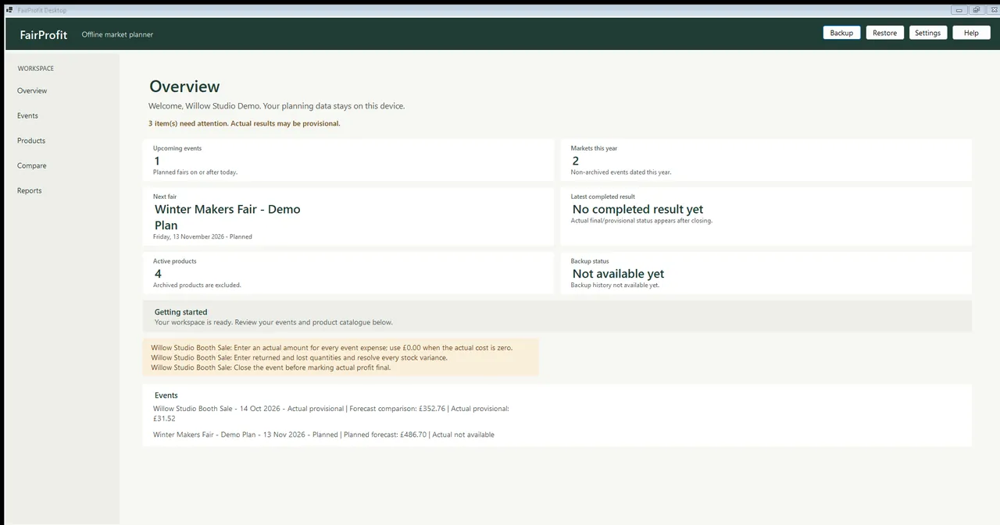
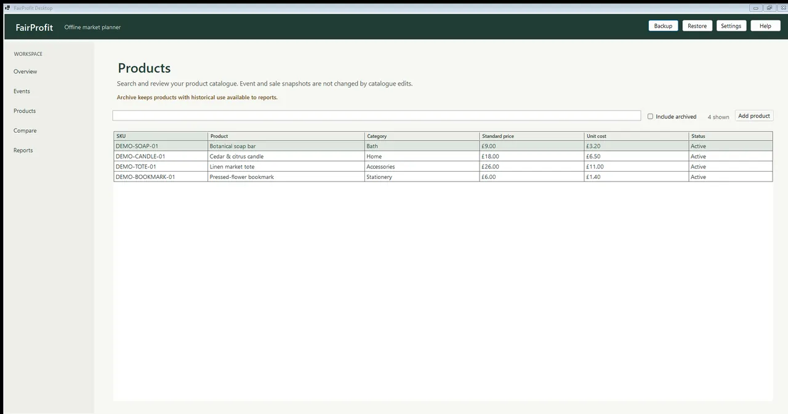
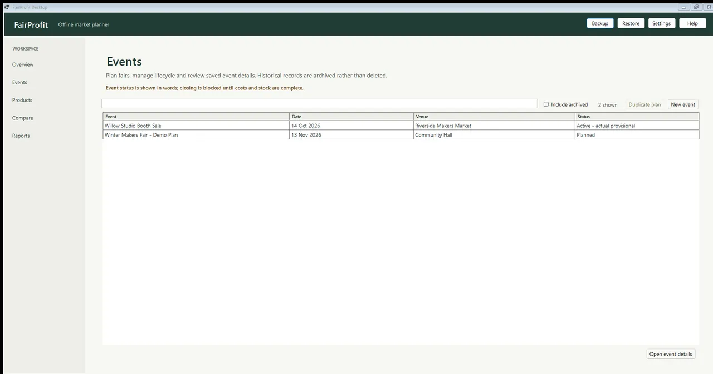
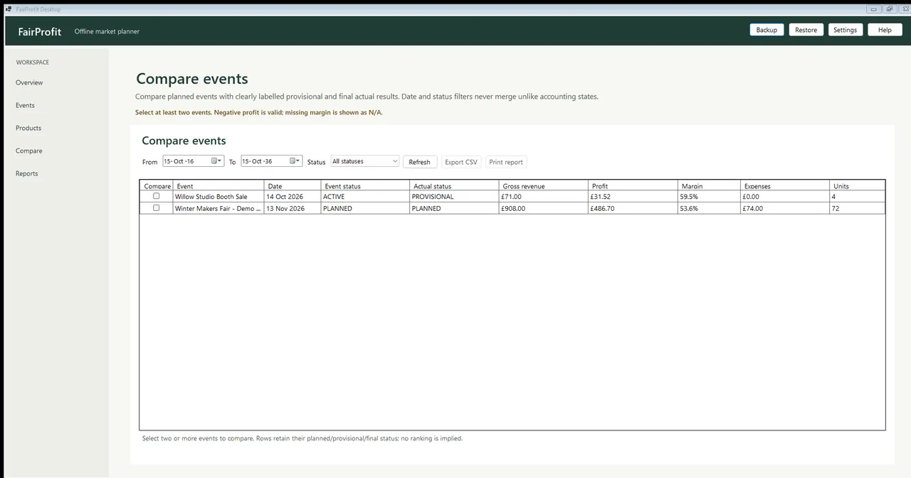

App para Windows · No ar
Craft Fair Profit
Calcule se uma feira de artesanato vale a pena antes de reservar. Registre o estoque, as despesas e as vendas de cada evento, e depois revise o que levar e quanto o dia realmente rendeu.
Para quem é: Para artesãos que planejam uma feira e querem saber se ela vai compensar.
O que faz
- Reúne estoque, custos e vendas de cada evento
- Estima o ponto de equilíbrio antes de se comprometer com um estande
- Listas de conferência do que levar e do que registrar
- Permite revisar cada evento depois, para ver o que funcionou
Capturas de tela



